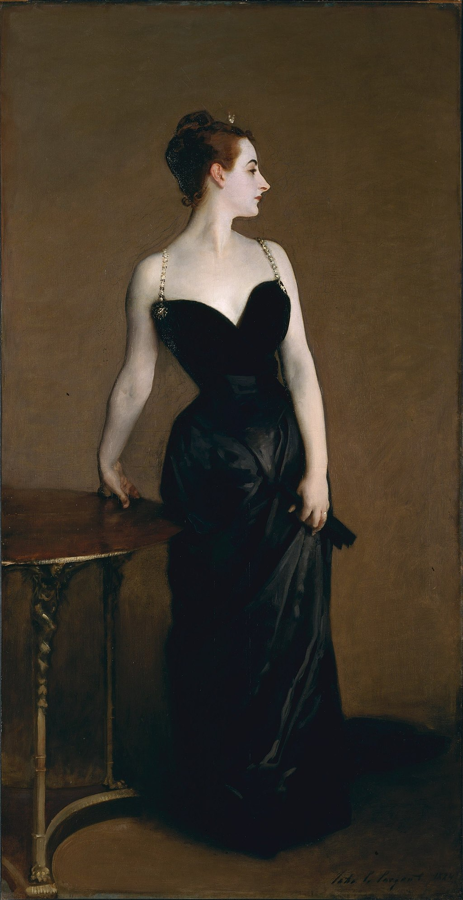

<head>
<meta charset="UTF-8" />
<meta name="keywords" content="drawing, painting" />
<meta name="description" content="drawings by Sunjy" />
<title>Sunjy</title>
<link rel="shortcut icon" type="image/x-icon" href="../../mImages/mCommon/favicon.ico" media="screen" />
<link rel="stylesheet" type="text/css" href="../../mCsses/mCommon/mCssA.css" />
<link rel="stylesheet" type="text/css" href="../../mCsses/mCommon/mCssB.css" />
<link rel="stylesheet" type="text/css" href="../../mCsses/mCommon/mCssC.css" />
<link rel="stylesheet" type="text/css" href="../../mCsses/mCommon/mCssD.css" />
<link rel="stylesheet" type="text/css" href="../../mCsses/mContent/mCssA.css" />
<link rel="stylesheet" type="text/css" href="../../mCsses/mContent/mCssB.css" />
<link rel="stylesheet" type="text/css" href="../../mCsses/mContent/mCssC.css" />
<link rel="stylesheet" type="text/css" href="../../mCsses/mContent/mCssD.css" />
</head>
<script type="text/javascript" src="../../mScripts/mContent/mContentAA.js" /></script>
<script type="text/javascript" src="../../mScripts/mContent/mContentAB.js" /></script>
<script type="text/javascript" src="../../mScripts/mContent/mContentAC.js" /></script>
<script type="text/javascript" src="../../mScripts/mContent/mContentAD.js" /></script>
<script type="text/javascript"></script> 
<script type="text/javascript">
document.write('<div class="mImgAbsolute"></div>');
/*
document.write('<p class="mFontSizeBColor" />From a white paper...</p>');
document.write('<table class="center"><tr><td>');
document.write('');
document.write('</td></tr></table>');
*/
</script>


<script type="text/javascript">
document.write('<p class="mFontSizeBColor" />Portrait of Madame X</p>');
document.write('<p class="mFontSizeSColor" />“Portrait of Madame X” by John Singer Sargent shows a socialite named Virginie Amélie Avegno Gautreau, an American expatriate who was married to a French banker.<br><br>Facts About John Singer Sargent’s Portrait of Madame X<br>•Madame X was a twenty-three-year-old American ex-pat whose beauty was much admired in France, her new home.<br>•John Singer Sargent had to beg for two years before the glamorous sociality agreed to sit for her portrait.<br>•To achieve her pale complexion, Madame X used a lavender-colored face powder. For contrast, she rouged her ears and dyed her hair red.<br>•Madame X’s hair is in the Ancient Greek era style plus with her diamond crescent tiara, the symbol of Diana, goddess of the hunt and the moon.<br>•The exhibition of the Portrait of Madame X at the Paris Salon of 1884, had the Critics scandalized with the nearly bare shoulders and cleavage.<br>•The gown’s plunging neckline was considered too provocative for the times.<br>•Initially, as exhibited, the right strap on the dress was painted as having slipped off the shoulder.<br>•Sargent had to repaint it in its proper position to appease outraged viewers and Gautreau’s own family.<br>•Madame X’s mother, Marie Virginie de Ternant, screamed at Sargent, “All Paris is making fun of my daughter. She is ruined … She’ll die of chagrin.”<br>•Sargent did eventually withdraw the painting and did not exhibit the picture again for years.<br>•The French scandal prompted Sargent to moved to London before settling in New York. When he began exhibiting the piece again in 1905, he became highly sought for commissioned work.<br>•Gautreau, the real Madame X, did shy away from the spotlight for a time, but in 1891, she had another portrait exhibited, of her in a dress a strap falling, but it failed to generate the same notoriety.<br>•Madame X was the young socialite, Virginie Amélie Avegno Gautreau, wife of the French banker Pierre Gautreau. Originally from New Orleans, America.<br>•After keeping the portrait in his personal collection for over 30 years, he sold it to the Metropolitan Museum in 1916.<br>•John Singer Sargent eventually considered it his most significant work, stating, “I suppose it is the best thing I have done.”<br></p>');
document.write('<table class="center" /><tr><td>');
document.write('<br>Facts About John Singer Sargent’s Portrait of Madame X<br>•Madame X was a twenty-three-year-old American ex-pat whose beauty was much admired in France, her new home.<br>•John Singer Sargent had to beg for two years before the glamorous sociality agreed to sit for her portrait.<br>•To achieve her pale complexion, Madame X used a lavender-colored face powder. For contrast, she rouged her ears and dyed her hair red.<br>•Madame X’s hair is in the Ancient Greek era style plus with her diamond crescent tiara, the symbol of Diana, goddess of the hunt and the moon.<br>•The exhibition of the Portrait of Madame X at the Paris Salon of 1884, had the Critics scandalized with the nearly bare shoulders and cleavage.<br>•The gown’s plunging neckline was considered too provocative for the times.<br>•Initially, as exhibited, the right strap on the dress was painted as having slipped off the shoulder.<br>•Sargent had to repaint it in its proper position to appease outraged viewers and Gautreau’s own family.<br>•Madame X’s mother, Marie Virginie de Ternant, screamed at Sargent, “All Paris is making fun of my daughter. She is ruined … She’ll die of chagrin.”<br>•Sargent did eventually withdraw the painting and did not exhibit the picture again for years.<br>•The French scandal prompted Sargent to moved to London before settling in New York. When he began exhibiting the piece again in 1905, he became highly sought for commissioned work.<br>•Gautreau, the real Madame X, did shy away from the spotlight for a time, but in 1891, she had another portrait exhibited, of her in a dress a strap falling, but it failed to generate the same notoriety.<br>•Madame X was the young socialite, Virginie Amélie Avegno Gautreau, wife of the French banker Pierre Gautreau. Originally from New Orleans, America.<br>•After keeping the portrait in his personal collection for over 30 years, he sold it to the Metropolitan Museum in 1916.<br>•John Singer Sargent eventually considered it his most significant work, stating, “I suppose it is the best thing I have done.”<br>" />');
document.write('</td></tr></table>');
</script>


